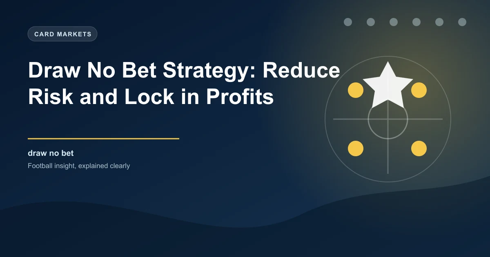

Draw No Bet (DNB) is one of the most useful markets in football betting. It removes the draw from the equation — if the match ends in a draw, you get your stake back. This makes it a lower-risk alternative to standard 1X2 betting, ideal when you fancy a side but want insurance against a stalemate.
With DNB, you pick a team to win. If they win, you collect at the advertised odds. If the match is a draw, your stake is returned — no profit, no loss. If your team loses, you lose the bet.
This effectively creates a two-outcome market from a three-outcome event. The bookmaker accounts for this by offering lower odds than the equivalent 1X2 win market, since the draw risk is eliminated.
Liverpool DNB @ 1.75
Compare with Liverpool 1X2 @ 2.10 — lower odds on DNB, but you're protected if the match ends level.
Many bettors confuse DNB with Asian Handicap 0.0 (AH 0.0). While they behave identically — stake back on a draw — there are subtle differences:
| Feature | Draw No Bet | Asian Handicap 0.0 | 1X2 (Home Win) |
|---|---|---|---|
| Outcome if team wins | Win | Win | Win |
| Outcome if draw | Push (stake back) | Push (stake back) | Loss |
| Outcome if team loses | Loss | Loss | Loss |
| Typical odds level | Medium | Medium (may differ slightly) | Highest |
| Available at most bookmakers | Yes | Yes | Yes |
In practice, DNB and Asian Handicap 0.0 are interchangeable. However, some bookmakers offer slightly different odds on each. Always check both — if the AH 0.0 price is higher, take it instead of DNB. They settle identically on a draw.
DNB shines in specific situations. Here's when it makes sense:
A top team travelling away against a mid-table side. You expect them to win, but away draws happen regularly. DNB protects you from the draw while keeping most of the value.
Every leg in an accumulator adds risk. Swapping a 1X2 pick for DNB reduces the chance of a single draw ruining your entire acca. The lower odds are worth the insurance when combining multiple selections.
If you're on a losing streak or betting a larger stake than usual, DNB limits downside. A draw doesn't cost you anything — you live to bet another day.
If you think the bookmaker has overpriced the draw (too high odds), the implied probability of a draw is lower than it should be. In that case, backing the favourite on DNB removes the inflated draw from your risk.
Compare DNB odds across bookmakers early in the day. DNB markets are less liquid than 1X2, meaning price discrepancies last longer. You can often find DNB odds that are higher than the equivalent Asian Handicap 0.0 at another bookie.
You can calculate fair DNB odds by removing the draw probability from the market. Convert odds to implied probabilities, strip the bookmaker margin, then redistribute the draw probability across win and loss outcomes.
Step-by-step example using real odds:
If the bookmaker offers DNB at 1.65 or higher, there's value. If DNB is below 1.57, the bookmaker has priced it with negative value.
Some leagues have fewer draws than others. The Premier League averages around 24% draws, while Serie A can see 28-30%. DNB is more valuable in low-draw leagues because you're less likely to need the insurance — but when you do, it's there. Focus DNB play on leagues with historically low draw rates.
Watch the first 20-30 minutes of a match. If a favourite starts slowly and the match looks even, the in-play DNB price will have lengthened. You can step in at better odds with the same protection. This works particularly well when the pre-match odds were too short.
Back a team on DNB pre-match, then lay them on a betting exchange (or back the draw) in-play if they take the lead. This locks in profit regardless of the final result. Example: Back Liverpool DNB @ 1.75, then if Liverpool scores first, lay Liverpool at shorter odds to guarantee a return.
Understanding the implied probability of DNB odds helps you spot value. The calculation is straightforward:
Implied Probability (%) = 1 / DNB Odds ? 100
For DNB @ 1.80: 1 / 1.80 ? 100 = 55.6%. That means the market believes the team has a 55.6% chance of winning (with a draw resulting in a push). Compare this to your own assessment — if you think the team has a 65% chance, the DNB bet offers value.
Compare the DNB odds to the 1X2 home win odds. DNB should always be lower. As a rule of thumb, DNB odds typically sit at roughly 70-85% of the 1X2 win price, depending on how likely a draw is. If DNB is above 85% of the 1X2 price, check whether the draw probability justifies the small discount — you may have found value.
Using DNB in an accumulator reduces variance. Consider a 5-leg acca:
If each leg has a 10% chance of drawing, the 1X2 acca has a 41% chance of being killed by a draw (1 - 0.95). With DNB, those draws become stake returns instead of losses. The trade-off is lower combined odds, but the settlement rate is significantly higher.
Historical draw rates vary significantly by league. This directly impacts DNB value — lower draw rates mean DNB odds are closer to 1X2 prices:
| League | Approx Draw Rate | DNB Suitability |
|---|---|---|
| Premier League | ~24% | Good |
| Bundesliga | ~22% | Very Good |
| Serie A | ~29% | Moderate |
| La Liga | ~25% | Good |
| Ligue 1 | ~26% | Good |
| Champions League | ~20% | Excellent — knockout matches draw less |
Double Chance (Team Win or Draw) offers broader protection — you win if the team wins OR draws. DNB only protects on a draw (stake back, not a win). Double Chance odds are significantly lower because the bookmaker is covering two of three outcomes. Use DNB when you genuinely think the team will win but want draw insurance. Use Double Chance when a draw is an acceptable result.
Draw No Bet is an underrated market that every football bettor should understand. It's not a magic bullet — the lower odds reflect the reduced risk — but used strategically, it improves bankroll stability and accumulator survival rates. The key is knowing when to use it and when to stick with standard 1X2.
Compare DNB odds across bookmakers, check AH 0.0 prices for discrepancies, and always assess whether the draw probability justifies the odds cut. Master these principles and DNB becomes a valuable tool in your betting arsenal.
Check today's matches and find DNB value with our predictions:
Generate optimized accumulator combinations from today's AI-powered predictions. Set your target odds and get instant ticket suggestions.
Free Ticket Builder →